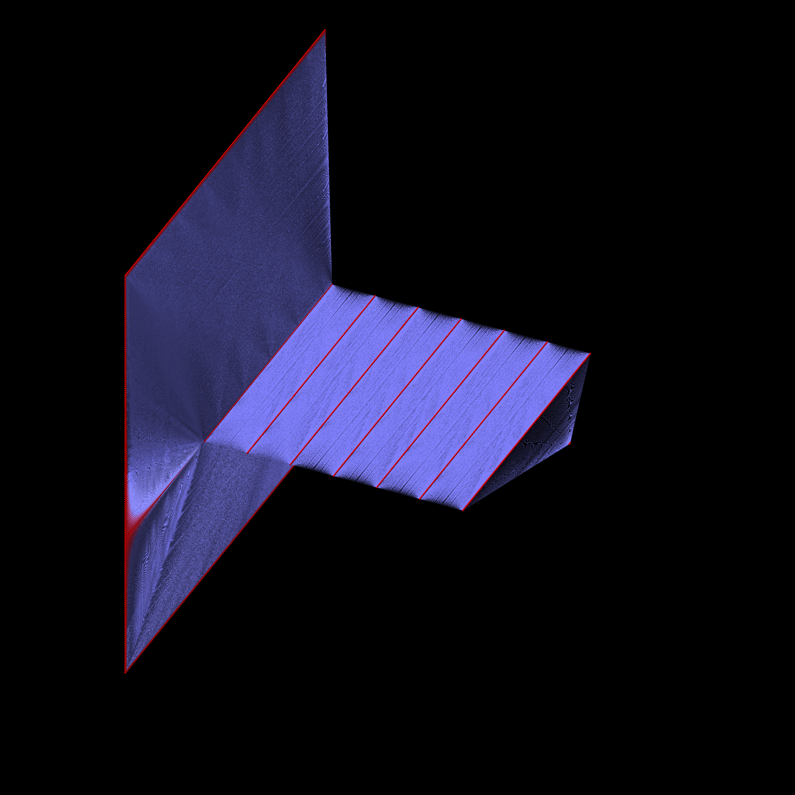

link to this page
Mind uploading
work in progress
 Mind uploading. The only method described here is what within the context of the Stareater Expanse is commonly referred to as the "machine learning approximation of single neurons" method.
Mind uploading. The only method described here is what within the context of the Stareater Expanse is commonly referred to as the "machine learning approximation of single neurons" method.
I have all the math and sources behind this process already in the specific case of Felicity, but haven't gotten around to extracting it into a separate dedicated document yet.
This article is also mainly for readers who already have a surface level understanding of how artificial neural networks work, but if that is not the case for you and yet you feel interested anyway, 3Blue1Brown has a beautifully elegant and comprehensible video explanation here that is likely the best entry to this topic you can get, as it is followed by more video explanations that build on one another to gradually cultivate a more complex understanding.
important vocabulary
Engram: a group of neurons that had become relatively sensitive to each other.
When several neurons that are part of one engram fire at once, they might cause the whole rest of the group to fire.
Engrams are thought to be a significant building block of human memories.
Artificial neuron: for clarity throughout this article the term 'artificial neuron' should refer to the simple neurons in artificial neural networks, not the recreation of a real biological neuron.
Mimic neuron: for clarity throughout this article the term 'mimic neuron' should refer to the model that mimics the behavior of a real biological neuron.
Parameter and Weight: a parameter or a weight is a number assigned to a connection between artificial neurons that dictates how strongly that connection affects the artificial neuron which uses it.
structure of mimic neurons
 The image on the right depicts a single mimic neuron, which itself contains 46 artificial neurons and 168 parameters.
The image on the right depicts a single mimic neuron, which itself contains 46 artificial neurons and 168 parameters.
This mimic neuron is an entire artificial neural network trained to behave like a biological neuron in terms of spiking and membrane potential.
The part market as "input stream" is a series of artificial neurons that act like a buffer.
They store a history of the inputs that the mimic neuron received.
When the next input comes in, the activation of each artificial neuron in the input stream is moved over to the neuron above and the first artificial neuron in the input stream is given the new activation.
This allows the mimic neuron to have a memory and react to receiving multiple spikes in quick succession like a real organic neuron would.
The whole input stream corresponds to one synapse of the organic neuron after which the mimic neuron was made.
In this example model the input stream size is only 4 artificial neurons, so the whole mimic neuron only has access to 4 milliseconds of input data coming to it from other mimic neurons.
Real mimic neurons would have input streams that hold onto 100 to 200 milliseconds of past inputs, and close to 7000 input streams in total as that's roughly how many synapses each organic human neuron has.
The main body of the mimic neuron simply corresponds to the main body of the organic neuron it was made to mimic.
It allows the complex spiking behaviour of organic neurons to be approximated.
The outputs provide membrane potential of the neuron, which contains the voltage spikes corresponding to neuron firing.
This output of the mimic neuron will be piped into the input streams of other mimic neurons, creating connections much like those of the organic neurons in the human brain.
A second artificial neuron is usually present in the output layer of the mimic neuron, signaling whether or not the neuron is currently receptive to engram formation, ie. trying to grow its connections with nearby neurons.
The image only illustrates the difference between the two, as well as the structure of the mimic neuron.
The number of artificial neurons in this mimic neuron is purposefully unreasonably small so that they can actually be seen, a real mimic neuron that is sufficient to do its job in a brain emulation would have a vastly larger number of artificial neurons.
Below you can see a visualization of an actual neuron, with body containing 7 layers of 128 neurons each, input streams 205 milliseconds long, and 200 total input streams.
A particularly isolated neuron with only 200 synapses was picked out for this visualization, as with the usual 7000 synapses visualized the block of input streams would be so large that you would barely be able to see the main body at this resolution.
This mimic neuron contains 41898 artificial neurons and 5 346 560 parameters

process
gathering data
todo
creating the brain model
todo
running the brain model
todo
possible complications
Misgeneralization: The machine learning approach had shown that persistent patterns present in the neurological activity of the organic brain will be reflected in the neurological activity of the upload, potentially even if their causes are removed.
The most common example of this is the persistent feeling of carrying something, stemming from certain aspiring uploads opting to collect their neurological activity in external storage devices which they had to carry around.
In some cases, due to the fact that there was no data collected during times when the person was not carrying a data storage device with them, the neuron models ended up misgeneralizing in such a way that the activity corresponding to carrying items continued to be present in the final brain model even despite no such task being carried out.
Many more patterns that can embed themselves in the data in such a way, so it is critical to ensure that the collected data is diverse, corresponding to many different activities, sensations and states of mind.
It is common to record one's surroundings to match the neurological data with, and then filter the data before constructing the final brain model.
Updating an existing, already running brain model without killing the upload is a much more involved effort than simply doing a good job the first time, but it is possible. The already-trained neuron emulation networks can be put back into training, using the expanded dataset, and their function is likely to correct itself, but it carries some risk of memory loss.
If a neuron undergoes too much change, the memories it took part in encoding may no longer be retrievable, or may become distorted, so when correcting misgeneralization it is necessary to make the corrections in small steps, which shift the function of neurons slightly, with a lot of time inbetween for the upload to recall and re-form the memories into engrams involving the modified neurons.
A fairly reliable way to prevent any significant misgeneralization is to go adventuring for diverse experiences and build the dataset over multiple years to ensure diversity in data, and make the collection of neurological data as seamless as possible to allow oneself to live life as normal in the mean time.
Honorable mention: mimic brains
As there are not yet any known cases of a practical implementation of a mimic brain nor are there any solid numbers on them, they will only be mentioned here briefly, but the idea is, instead of training small neural networks to pretend to be neurons and then link them together, just make one large neural network that is trained on the total of recorder inputs and outputs of the brain as a whole, thereby making a much more efficient emulation that focuses on the mental processes rather than wasting computation on the details of neurological activity.
It is likely that the internal structure and function of such a brain would be vastly different to the original even though the outward behavior may still be the same, whether the mind inside is feeling just like you and behaving accordingly, or just suffering massive fear of what will happen if it ever stops pretending to be you, or if it is feeling anything at all for that matter and not just returning responses out of instinct with little actual thought.
There is a commonly quoted argument against that variance is the thought experiment of pretending to add 2 numbers together, don't actually run the number addition in your head, only pretend, but still return the right number - pretty hard isn't it?
As convincing as the argument may be in the case of addition, it should not go without notice just how immensely difficult it is to find other such cases where there truly is only one or just a few ways to conduct a mental process that results in the 'correct' behaviour.
(The author of the article is indeed biased against that approach given its still not ruled out potential for unknowable suffering.)